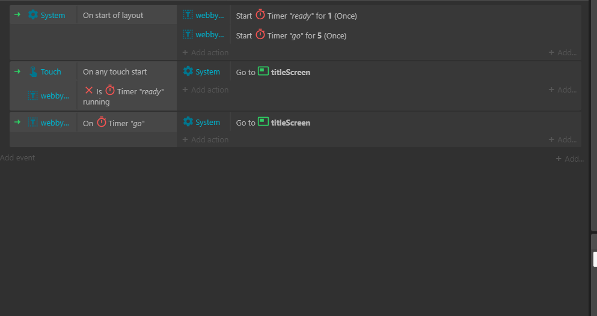

This website was made for a school paper, link to the paper is here.
It's completely different to this and talks about the issues/possible solutions for teaching math in the k-12 system.
Introduction
Before this paper starts, I would like to thank all of my peers who were willing to let me "teach them programming". I learned so much from this experience and I am eternally grateful for their patience.
When the average person thinks of code, they often see it as some alien knowledge created by some crazy math god.
And with how many paths there is to take towards learning programming, it can be understandable to see it as an impossible skill. But it shouldn't need to be this way.
I have also been in this situation, and this is why I wanted to spend three days to help give my peers an opportunity to learn programming.
If you can solve the problem 1 + x = 2, then you can program.
Day One
It took me a while to decide on what to start teaching first, programming is technically an infinitely complex field. So
how do you give people the tools to begin creating something interesting, while also not overwhelming them?
I decided that you only needed to teach 3 main concepts to get the best of both worlds.
If Statements, Functions, and Variables
Explaining what they are is out of the scope of this paper, but with these tools it is possible to create pretty much anything in programming.
The benefit to this is that it prevents cognitive overload. Cognitive overload is the natural capacity of our short term memory to learn around 4 ± 1 things at once (Case).
3 things to teach, sounds simple right? Well when you factor in something like syntax, the amount of things to keep stored in short term memory skyrockets (Hermans).
When my peers have to focus on where to put semicolon in code. They have no more room to focus on the 3 main concepts I sought out to teach.
This is the same as teaching grammar in English. No one wants to learn it, so how do you sneak it in?
Well turns out, there are not many options around it. Humans tend to learn brand new concepts through passive learning, essentially, word for word memorization (Hermans).
This counteracts the popular belief that new students can learn how to code faster by exploring through experience such as trial and error.
In fact, according to a study done by :Felienne Hermans, students perform and learn syntax much better by reading "step by step" vs "exploring code" on their own.
Ex.
for i in range(4):
for i in range, round open bracket, four, round closing bracket, colon.
This relates back to the idea of cognitive load. A student can't start writing a novel without learning how to structure a word "letter by letter" first (Sian).
Though, Here is the predicament,
according to the Yerkes-Dodson graph, students learn best when stress levels are kept at a sweet spot.
Arousal can also mean stress level*
And since traditional programming requires learning syntax first, teaching both subjects at once would've overwhelmed them, creating high stress.
The solution?
While multimodals aren't the greatest at Teaching dry skills like syntax, they can certainly help ease students into a topic as they tend to help gain a broad understanding (Amanda 13).
I wanted to give my peers a basic concept of what programming is before they learn the syntax as to not overwhelm them.
In my other paper linked at the top of this page. I talk about the importance of multimodality in math. The objective in teaching is to change the perspective of a student. Rigorous memorization of syntax is a skill learned through practice, and is something a teacher cannot teach (Lockhart 27).
Therefore, multimodals thrive in teaching, as they are useful in engaging and making students think about a problem in a new way (Amanda 16). To assist in this point, I've created a visual interactive that explains a simple math problem.
This is where multimodals truly shine, sure the final proof wasn't as rigorous as a step by step proof. But it explains a pattern in a quick and intuitive way (Sanderson).
***
It may be a stretch to some people, but I believed that block coding is one of the best ways to learn programming.
Block coding combines the visual and spatial aspect of multimodality to explain and manipulate logic. What makes this so perfect is that it takes away from the compact unreadable standard code to help students ease into the main(and more fun) concept of programming.
It's not that block coding is meant to take aspects away from programming, it's merely a different way to look at problems. It's still possible to do the exact same things that a "real" programming language like :C can do.
:Harvard University even introduces :scratch as the first programming language for students to learn in their class "CS50 introduction to programming."
There was one big flaw with this method though. Often, it would distract from the content that was meant to be taught. My peers would get stuck focusing on how to use the software instead of the core concepts being taught.
(Sounds kind of like the original problem right?) But it could've been worse, if my peers started out typing programs, they would've been even more overwhelmed.
Going back to the Yerkes-Dodson graph, this is my guess for where they were.
Given the time constraint, I tried my best to reduce this by creating preset files to work off of. If there was a perfect solution, it would be to create a custom multimodal interactive tailored for a topic that's charming, simple and engaging (Amanda 23).
All in all, day one got the main message across, and surprisingly my peers even remembered some of the details.
Their stress/struggle level almost perfectly hit the sweet spot. The goal was to not have them always know what to do, nor should they have been completely clueless. So staying in the orange zone here fits Yerkes-Dodson's graph quite well.
:Side note
This is a personal note, but I would knock each rating on the fun scale down by 3.
It's most likely only rated so high because they would've felt bad as friends.
definitely screw that person who voted 7, he prob cant make decisions lmao.
Day 2
It was time to move up a level. We could've stay in block coding for months, but I knew my friends would feel disappointed if they couldn't try out "the real deal".
This was once again intimidating to both teach and for them to learn. They would have to learn another new software along with the dreaded topic of syntax.
In hindsight, I wish I started with the "reading word by word" strategy. But the method I used did the job alright. My solution was to start teaching reading syntax instead of writing it.
I believed, that with basic knowledge, they could read this code by the end.
To start, with the purpose of reducing cognitive load, I once again made preset projects to focus on a core topic.
For example here is one of the "puzzles", used to teach functions and if statements.
It was all pretty standard procedure. People were learning bit by bit how to code, but something interesting happened.
Later, we decided to go back to the original chunk of code that seemed to be impossibly complex.
Rather than just spitting out what this code did with a definite answer, I simply asked my peers to infer about what this is. Even though they never learned how to make this specific code, they understood that all they needed to know was variables, functions and if statements.
Sure, by the end of the talk they didn't fully understand what the code was, and to be honest even I didn't full understand what I wrote in that code.
But the point is, they started to use critical thinking to come up with their own interpretations. They pretty much learned what its like to program,
this process is what programming is all about (Hermans).
Ps. :here is an example of one of my peers going through the mental process of figuring out what this code is
If only this had happened more, it was one of those magical moments where my peers could actually apply what they learned in their own way.
Day 3
It was a catastrophe.
I had a lot of ambitions for the final day, and a lot of experimental ideas that I thought would work, but failed miserably. My ideas for the course
were so experimental to the point where it's hard to put into words for this paper.
Here is a summary of the ambitions for the final day
- How hard or easy it can be to create games
- How easy it is to create games with the help of software
- How to create unique and engaging ideas for games
- Inspire my peers to learn and create games on their own
At this point, I felt like I taught the most important things about programming. If I were to teach anything more, it would've been about specific tools and techniques.
I assumed my peers would be better off learning this through experimentation and googling.
As it was mentioned before, complete beginners learn best through passive learning. But since my peers had basic knowledge, I thought that they could start coding using active learning. After all, active learning is more fun right?
Well it turns out they were not ready to start creating code on their own. Which should've been obvious, but I wanted to test a theory. If someone was there to guide them through the process, to give them the tools that they need, maybe they could've learned better?
And to be honest, I still think that this method of teaching could've been great, to help them create what they are inspired to do. There was just one big thing that they lacked, which was a reason.
So here was my solution, teach them how to create a cool idea!
This was an egotistical idea.
An idea that went terribly.
They were a multitude of reasons for why I almost blacked out; barely any sleep, food or water. But the main contributor was a realization that this wasn't gonna work.
I realized that I wasn't actually teaching them anything. At the point where I was, I was trying to explain how to create ideas, it felt disjointed and unrelated.
Embarrassingly enough, it was an prideful mindset to think that I could create a reason for them to create games, let alone programming.
I thought, if I could help them create an idea, then they would be inspired to create on their own and that I could let them go from there. This was clearly not the case.
This mindset is as useless as telling someone to "follow their passions".
Sure, reasons and inspiration can help. But there is a more universal solution to helping them be inspired.
Learning the programming itself.
Remember at day 2 when my peers were figuring this out?
I've pondered this for a while, it doesn't make sense. Why would my peers be engaged in discussion about something seeming less and random?
The theory that applies here is once again, the Yerkes-Dodson theory. Being able to write in syntax is overwhelming and hard, often taking some people weeks or months to master.
Since there was no goal of memorizing and writing syntax. My peers were able to focus on something that wasn't too hard or easy.
My peers were allowed to compare and contrast ideas on an equal level of skill. No one really could've gotten it perfect, but since they had the confidence to solve the problem, they got curious, and actually put thought into understanding the problem.
It might not have been as riveting as binge watching a tv show, but in the words of one of my peers...
"We were actually able to apply what we learned, we recognized big functions and realized that we could become programmers too"
It might sound a cliche, but motivation is earned when people find out they learned something that can applied to something else (Meyer).
This creates a positive feedback loop. Students put in the effort to learn, and get rewarded with the satisfaction of application. This satisfaction creates motivation, which results in more effort to learn.
There is raw enjoyment and interest in the cycle of learning. What I did by attempting to give them excitement through ideas was covering the broccoli in chocolate.
Embrace the learning process. "season & roast those veggies, bring out the natural tastiness that's already in the broccoli." (Case).
Summary
- Take 4±1 related topics to teach at once.
- Start by explaining the broad idea of the topic(preferably multimodal).
- Use passive learning to teach new topics.
- Move into puzzles to build skill and long term memory.
- With the newfound confidence, apply what was learned.
Despite the extreme highs and lows, what's on this paper is a mere fraction of what I learned through teaching. Only one of my peers continued to program on his own, which means I have failed to teach in that aspect. But almost all of them left with a new perspective, so I am happy that I left even the smallest dent.
Programming has a bad reputation, but with a change in perspective, it can be taught to anyone within a few hours.
: Works Cited
Beilock, Sian L., and Daniel T. Willingham. “Ask the Cognitive Scientist.” Math Anxiety: Can Teachers Help Students Reduce It?, vol. 38, no. American Educator, 2014, pp. 28-32. Math Anxiety: Can Teachers Help Students Reduce It? Ask the Cognitive Scientist, https://files.eric.ed.gov/fulltext/EJ1043398.pdf. Accessed 16 3 2024.
Boaler, Jo. “Fluency Without Fear.” YouCubed, 28 01 2015, https://www.youcubed.org/evidence/fluency-without-fear/. Accessed 16 March 2024.
Case, Nicky. “Curse of the Chocolate-Covered Broccoli (or: Emotion in Learning).” Nicky's Blog, 5 December 2019, https://blog.ncase.me/curse-of-the-chocolate-covered-broccoli-or-emotion-in-learning/. Accessed 16 March 2024.
Finkel, Dan (2017, Feb) Five Principles of Extraordinary Math Teaching [Video] TED. https://www.youtube.com/watch?v=ytVneQUA5-c&pp=ygUNdGVhY2hpbmcgbWF0aA%3D%3D
Gonzalez, Jennifer. “Frickin' Packets.” Cult of Pedagogy, 26 March 2018, https://www.cultofpedagogy.com/busysheets/. Accessed 8 April 2024.
Hermans, Felienne "How to teach programming (and other things)?", “Strange Loop Conference”, 14 September 2019, youtube, https://www.youtube.com/watch?v=g1ib43q3uXQ Accessed 2 April, 24
Muller, Derek A. Khan Academy and the Effectiveness of Science Videos. 2011. youtube, https://www.youtube.com/watch?v=eVtCO84MDj8&t=258s.
"I need a counterclaim from a hostile audience for the following
claim: (claim) Students should be able to use AI software because they will need to use it in their future careers." prompt. ChatGPT, ChatGPT 3.5, OpenAI, 6 Feb. 2024, chat.openai.com/chat.
"I need a counterclaim from a hostile audience for the following
claim: (claim) Students should be able to use AI software because they will need to use it in their future careers." prompt. ChatGPT, ChatGPT 3.5, OpenAI, 6 Feb. 2024, chat.openai.com/chat.
"I need a counterclaim from a hostile audience for the following
claim: (claim) Students should be able to use AI software because they will need to use it in their future careers." prompt. ChatGPT, ChatGPT 3.5, OpenAI, 6 Feb. 2024, chat.openai.com/chat.
"I need a counterclaim from a hostile audience for the following
claim: (claim) Students should be able to use AI software because they will need to use it in their future careers." prompt. ChatGPT, ChatGPT 3.5, OpenAI, 6 Feb. 2024, chat.openai.com/chat.
"I need a counterclaim from a neutral audience for the following
claim: (claim) Students should be able to use AI software because they will need to use it in their future careers." prompt. ChatGPT, ChatGPT 3.5, OpenAI, 6 Feb. 2024, chat.openai.com/chat.
"I need a counterclaim from a neutral audience for the following
claim: (claim) Students should be able to use AI software because they will need to use it in their future careers." prompt. ChatGPT, ChatGPT 3.5, OpenAI, 6 Feb. 2024, chat.openai.com/chat.
"I need a counterclaim from a neutral audience for the following
claim: (claim) Students should be able to use AI software because they will need to use it in their future careers." prompt. ChatGPT, ChatGPT 3.5, OpenAI, 6 Feb. 2024, chat.openai.com/chat.
"I need a counterclaim from a neutral audience for the following
claim: (claim) Students should be able to use AI software because they will need to use it in their future careers." prompt. ChatGPT, ChatGPT 3.5, OpenAI, 6 Feb. 2024, chat.openai.com/chat.
Meyer, Dan. “If Math Is The Aspirin, Then How Do You Create The Headache?” dy/dan, 17 June 2015, https://blog.mrmeyer.com/2015/if-math-is-the-aspirin-then-how-do-you-create-the-headache/. Accessed 16 March 2024.
Kartak, Amanda. Real World Reboot: Multimodality. 2022. Saint Mary's University of Minnesota, Masters of Education in Teaching and Learning.
Lockhart, Paul. A Mathematician's Lament. Illustrated edition ed., Bellevue Literary Press, 2009.
Sanderson, Grant. When do programmatic visuals help in understanding math? 14 Oct 2021. youtube, https://www.youtube.com/watch?v=gvck7ssg9dE.
Shoenfeld, Alan H. “When Good Teaching Leads to Bad Results: The Disasters of "Well Taught" Mathematics Courses.” Educational Psychologist, vol. 23, no. 2, 1988, p. 22. researchgate, https://www.researchgate.net/profile/Alan-Schoenfeld-2/publication/239027194_When_Good_Teaching_Leads_to_Bad_Results_The_Disasters_of_%27Well-Taught%27_Mathematics_Courses/links/02e7e528dae5f8984d000000/When-Good-Teaching-Leads-to-Bad-Results-The-Disasters.
multimodal image from wikipedia